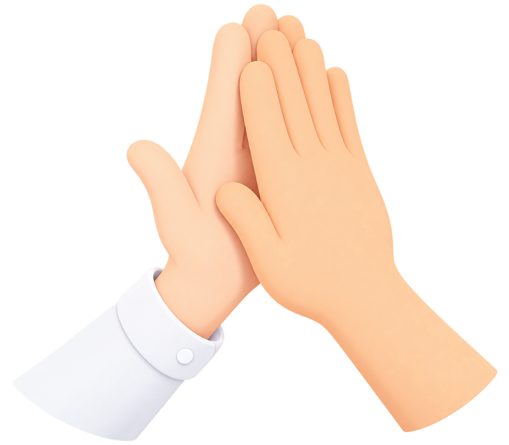

우리가 함께한다면
어떤 시너지를 낼 수 있을까요?
이 테스트는 채용 전, 귀사의 업무 방식과 제가 잘 어울릴 수 있을지
가볍게 알아보기 위한 과정입니다.
질문을 통해 서로의 업무 성향을 살펴보시고,
혹시 함께 이야기 나눠보고 싶다는 생각이 드신다면
편하게 연락 주시면 감사하겠습니다.

총 10개의 질문이며, 1~2분 정도 소요됩니다.
이 테스트는 채용 전, 귀사의 업무 방식과 제가 잘 어울릴 수 있을지
가볍게 알아보기 위한 과정입니다.
질문을 통해 서로의 업무 성향을 살펴보시고,
혹시 함께 이야기 나눠보고 싶다는 생각이 드신다면
편하게 연락 주시면 감사하겠습니다.

총 10개의 질문이며, 1~2분 정도 소요됩니다.